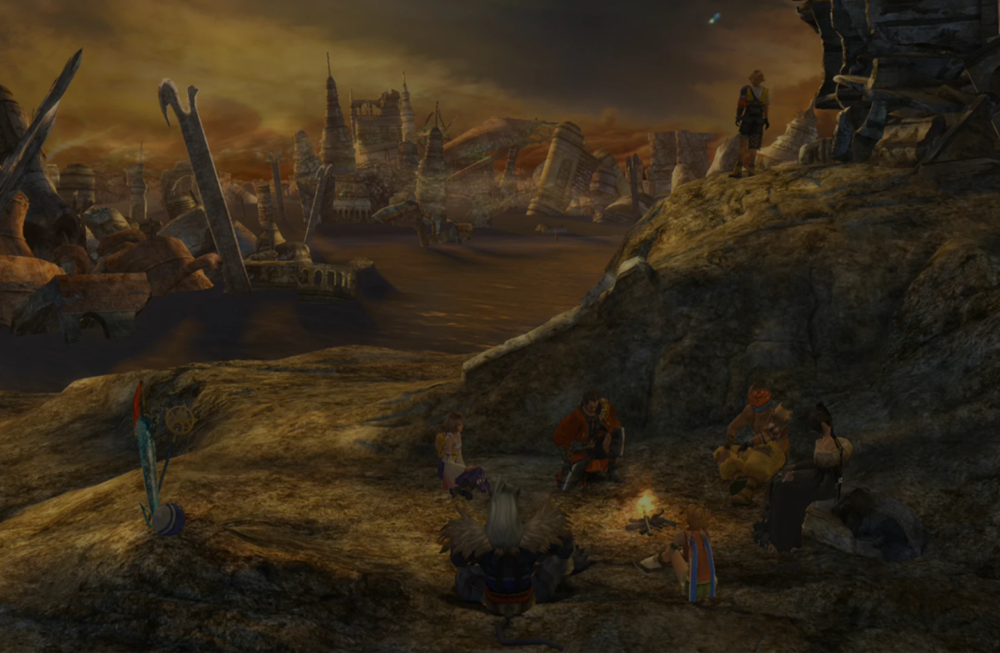

Personagens

Inicio da pagina
Tidus é um jogador de blitzball de uma brilhante metrópole conhecida como Zanarkand. Durante a Copa Memorial em honra a Jecht, pai de Tidus e lendário jogador de blitzball que desapareceu há dez anos atrás, o estádio é destruído por um monstro colossal que ataca a cidade. Tidus é varrido pelo monstro juntamente com Auron, um homem que esteve cuidando dele desde que Jecht desapareceu e sua mãe morreu, deixando-o órfão. Tidus acorda em um mundo desconhecido chamado Spira, onde encontra pessoas cuja língua ele não entende e uma ilha habitada por pessoas com costumes aos quais ele não está familiarizado. A única coisa que ele reconhece é o blitzball e, após testemunharem suas habilidades, os habitantes desejam adicioná-lo ao time local. Agora sob os cuidados de seus novos amigos, Tidus conhece a invocadora Yuna, que está partindo para uma peregrinação para derrotar Sin, o monstro que atacou Zanarkand e aparentemente transportou Tidus para o futuro, já que o único conhecimento que os habitantes de Spira têm sobre Zanarkand é que foi uma terra sagrada destruída pelo Sin há mil anos atrás.